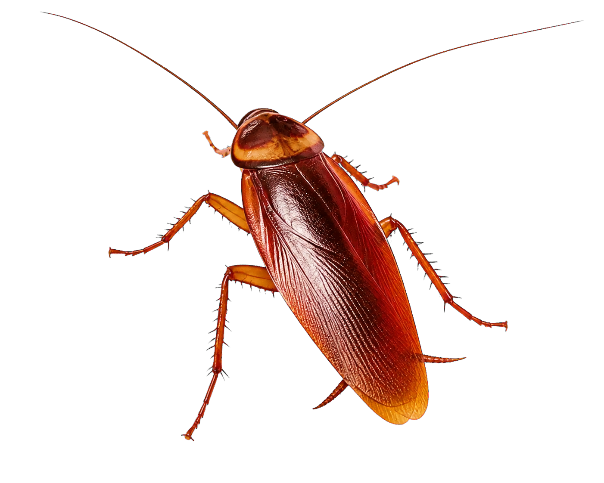
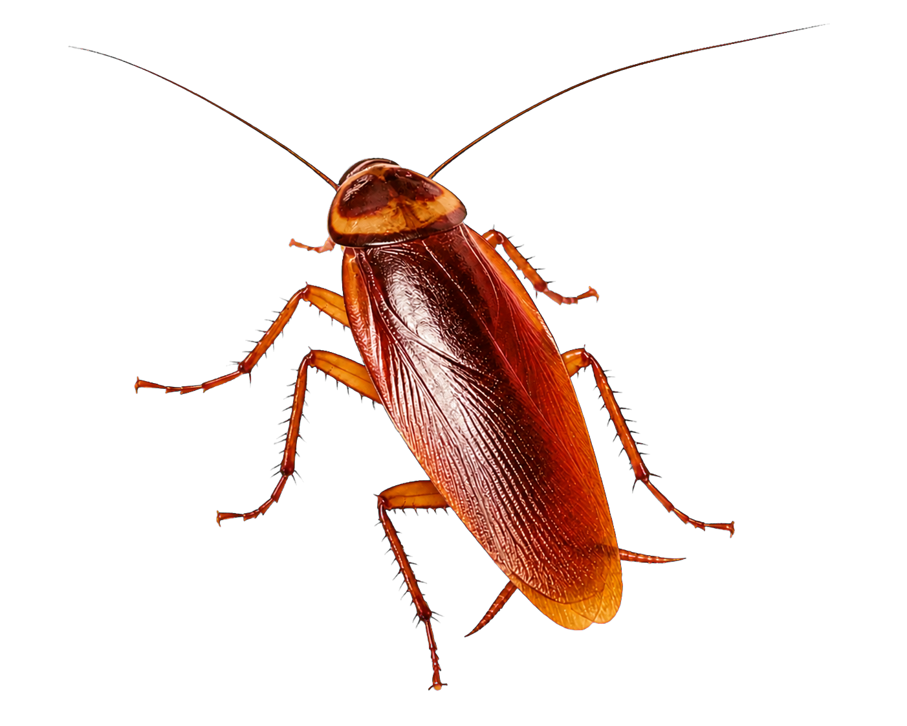
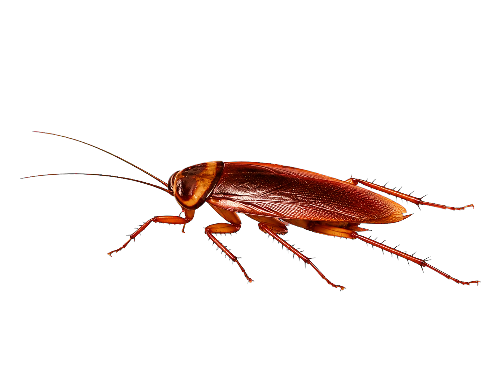
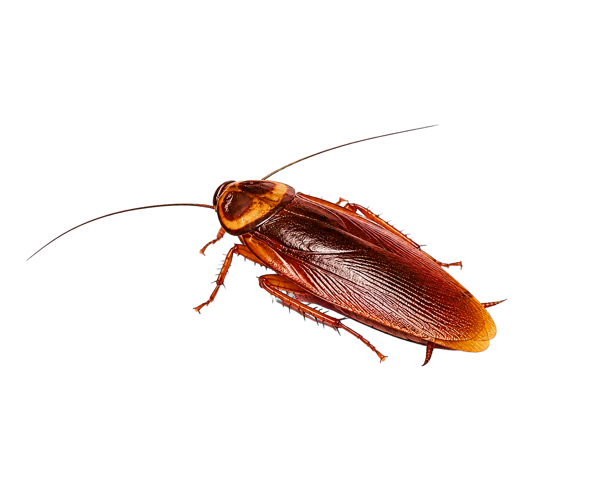
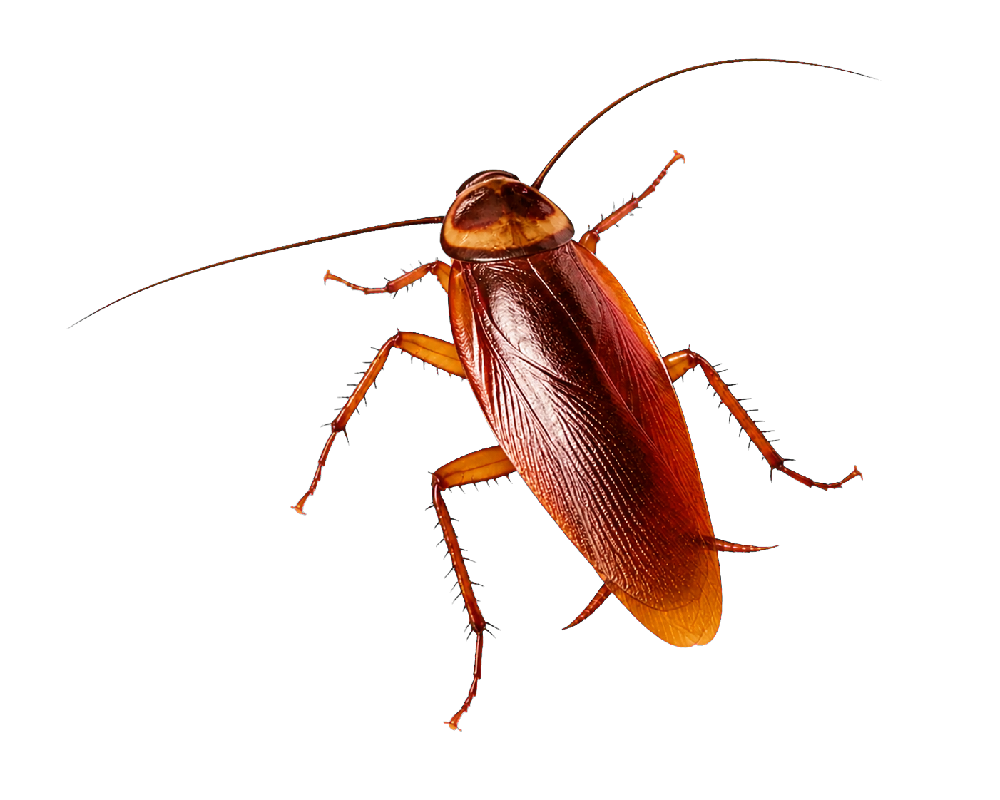
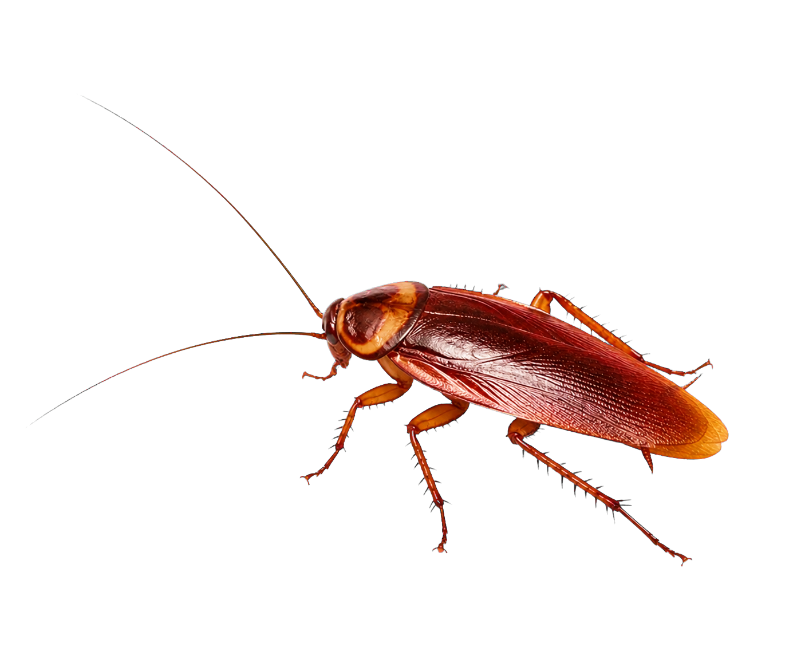

<!doctype html>
<html lang="zh-CN"><meta charset="utf-8"><title>Photo-real Roach Preview</title>
<style>body{margin:0;background:#16110d;color:#f2e2c3;font-family:Georgia,serif}header{padding:40px 7vw;border-bottom:1px solid #704524;background:linear-gradient(120deg,#2b130a,#120e0b)}h1{font-size:44px;margin:0}p{color:#d1b88b}.grid{padding:28px 7vw;display:grid;grid-template-columns:repeat(auto-fill,minmax(230px,1fr));gap:16px}.card{border:1px solid #704524;background:#24170e}.canvas{aspect-ratio:1;background-color:#777;background-image:linear-gradient(45deg,#999 25%,transparent 25%),linear-gradient(-45deg,#999 25%,transparent 25%),linear-gradient(45deg,transparent 75%,#999 75%),linear-gradient(-45deg,transparent 75%,#999 75%);background-size:24px 24px;background-position:0 0,0 12px,12px -12px,-12px 0}.canvas img{width:100%;height:100%;object-fit:contain}.name{padding:10px 12px;font:13px Consolas,monospace;color:#f0b263}</style>
<header><h1>PHOTO-REAL ROACH</h1><p>真实昆虫姿态 · 透明 PNG 素材库</p></header><main class="grid">
<article class="card"><div class="canvas"></div><div class="name">idle</div></article><article class="card"><div class="canvas"></div><div class="name">probe</div></article><article class="card"><div class="canvas"></div><div class="name">walk</div></article><article class="card"><div class="canvas"></div><div class="name">sprint / flee</div></article><article class="card"><div class="canvas"></div><div class="name">sleeping</div></article><article class="card"><div class="canvas"></div><div class="name">grabbed / struggle</div></article><article class="card"><div class="canvas"></div><div class="name">dropped</div></article><article class="card"><div class="canvas"></div><div class="name">alert</div></article>
</main>
